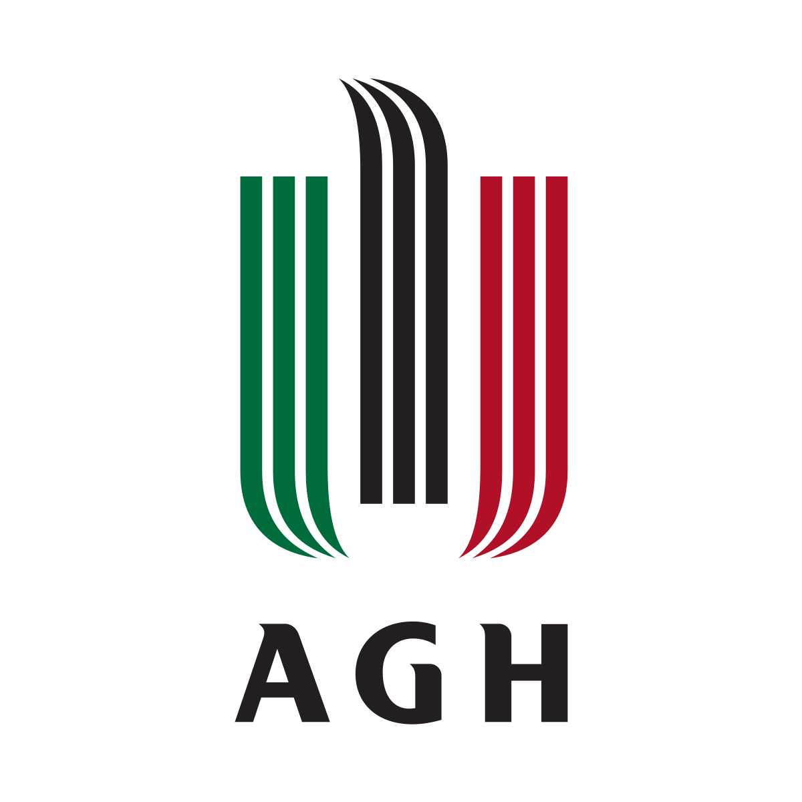

Doświadczenie
- Praca letnia w firmie Nicols [08.2022]
Praca letnia w firmie Nicols polegała na obsłudze urządzeń związanych z produkcją środków czystości.
- Praca dorywcza w firmie Investrate [06.2021 - 04.2022]
Praca dorywcza polegała na wykonywaniu projektów napowietrznych sieci światłowodowych w programie AutoCad.
- Praktyki w Gminie Cyców [11.2021]
Zgodnie z ciągiem nauczania w szkole technicznej odbyłem miesięczne praktyki. Podczas praktyk byłem pomocnikiem przy montowaniu kamer zewnętrznych oraz okablowania strukturalnego w Szkole Podstawowej w Malinówce.
Edukacja
- Studia - Akademia Górniczo-Hutnicza, kierunek: Cyberbezpieczeństwo [ od 09/2022 ]
Studia na Akademii Górniczo-Hutniczej rozpocząłem w 2022 roku, tytuł inżyniera planuję obronić w 2026 roku.
Dzięki studiom poszerzyłem wiedzę w zakresie informatyki, programowania, kryptografii, bezpieczeństwa informacji, fizyki oraz matematyki.
Jako specjalista ds. Cyberbezpieczeństwa będę dążył do implementowania bezpiecznych rozwiązań w systemach informatycznych
oraz uświadamiania współpracujących ze mną osób, jak ważne jest bezpieczeństwo w dzisiejszym cyfrowym świecie.

- Szkoła średnia - Zespół Szkół Elektronicznych w Lublinie (ZSEL), kierunek: Technik Teleinformatyk [ 09/2018 – 04/2022 ]
Podczas nauki w szkole średniej uzyskałem dwa certyfikaty (EE.10 oraz EE.11), co umożliwiło mi uzyskanie tytułu Technika Teleinformatyka. Dodatkowo uczęszczałem na kurs Akademii CISCO "CCNA Routing and Switching",
który poszerzył moją wiedzę na temat urządzeń firmy CISCO, konfiguracji oraz podstawowych informacji o protokołach stosowanych w sieciach komputerowych.
Ukończyłem szkołę średnią z maturą oraz brałem udział w olimpiadzie "Euroelektra", gdzie zdobyłem tytuł finalisty, co umożliwiło mi bezproblemowy dostęp na studia.
Umiejętności
- Programowanie urządzeń sieciowych
Dzięki kursom CCNA Routing and Switching, zapoznałem się z konfiguracją urządzeń
sieciowych firmy CISCO w sieciach lokalnych, jak i rozległych: protokoły routingu (RIP, OSPF, EIGRP, routing statyczny),
segmentacja sieci (VLAN, router na patyku), tunelowanie, bezpieczeństwo w sieciach lokalnych (port security, access listy).
Potrafię również konfigurować urządzenia firmy TP-LINK.
- Spawanie światłowodów, pomiary reflektometrem OTDR
Podczas nauki w Technikum Elektronicznym zapoznałem się z procedurą spawania światłowodów,
pomiarem tłumienności metodą transmisyjną oraz pomiarem reflektometrem. Przykładowa analiza reflektogramów.
- Programowanie w językach: Python, C, JavaScript, HTML, CSS, Bash, SQL
Umiem programować w następujących językach: Python (proste programy, uczenie maszynowe),
C (programowanie sprzętowe, Przykładowy projekt na platformie ESP32), JavaScript, HTML, CSS (strony internetowe),
Bash (automatyzacja skryptowa), SQL (zarządzanie bazą danych, tworzenie serwera bazy danych, Przykładowy projekt bazy danych).
- Znajomość środowiska systemowego Windows/Windows Server/Linux
Zarządzanie środowiskiem Windows/Windows Server: tworzenie domeny DNS oraz Active Directory,
nadawanie uprawnień w systemie Windows, zarządznie serwerem. Znajomość środowiska Linux.